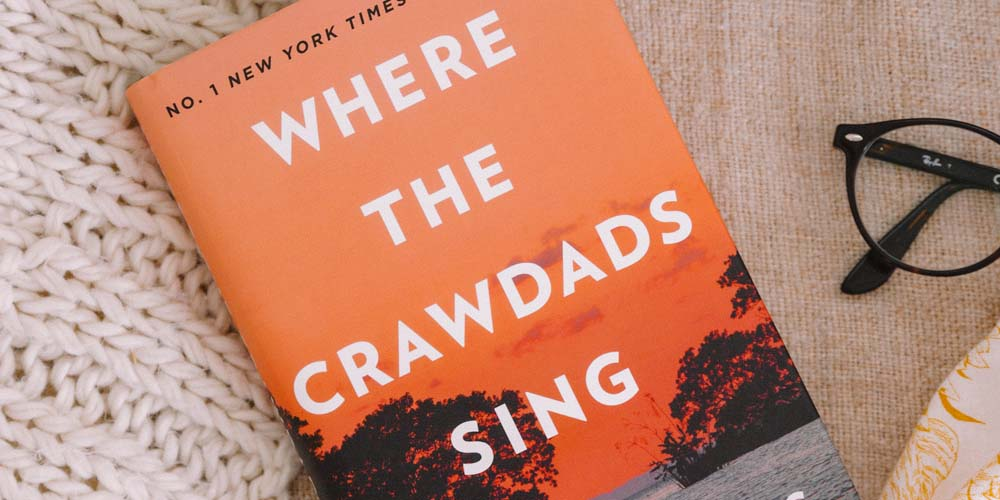

Great Reads

Where The Crawdads Sing Is about a young woman named Kya, who's left to raise herself in the marshes of North Carolina when her family abandons her at a young age. There is so much to her story: romance, mystery, and a murder… and it takes place in the breathtaking backdrop of the South.
In Five years In Five Years is a striking, moving love story about Dannie Kohan, a high-powered corporate lawyer who has everything planned out. The story opens on the day she interviews for her dream job, nails it, and gets engaged to her longtime boyfriend—all according to her five-year plan. That night, when she and her new fiancé get home, she falls asleep on the couch. But when she wakes up, she’s suddenly in a different apartment, with a different ring on her
finger, in bed beside a very different man. She looks over at the muted TV playing the news and sees the date: it’s 2025, five years in the future.